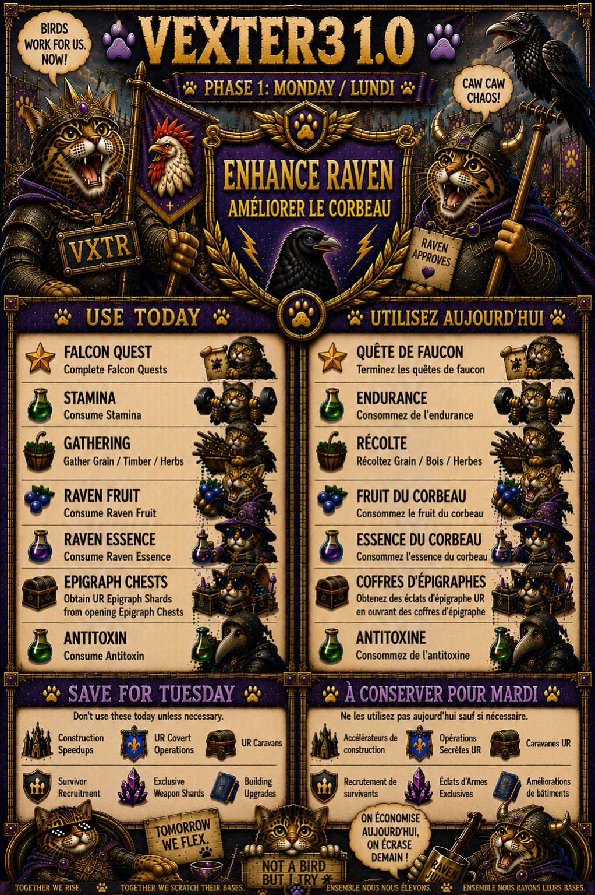
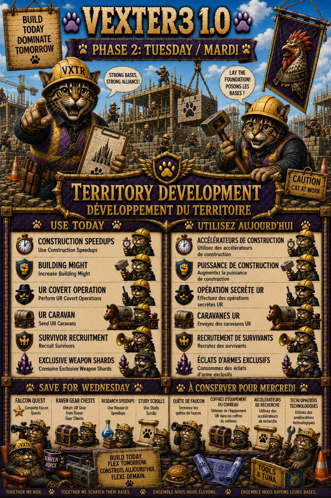
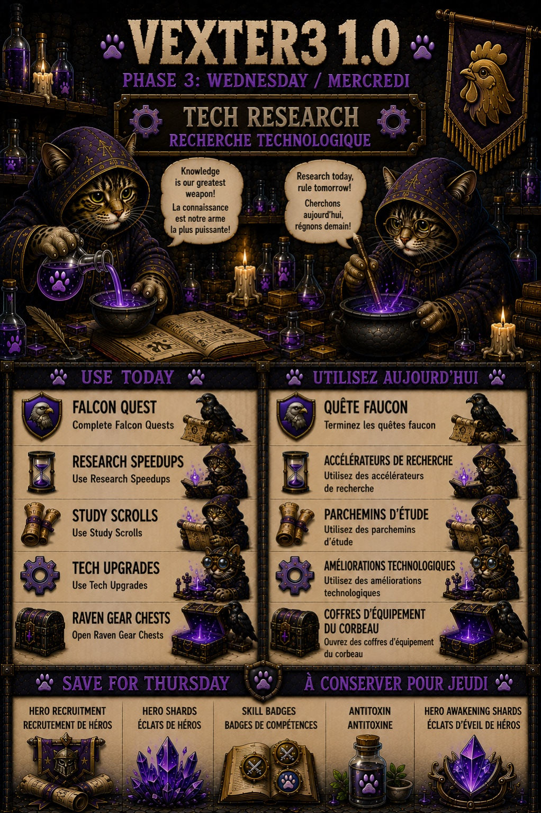
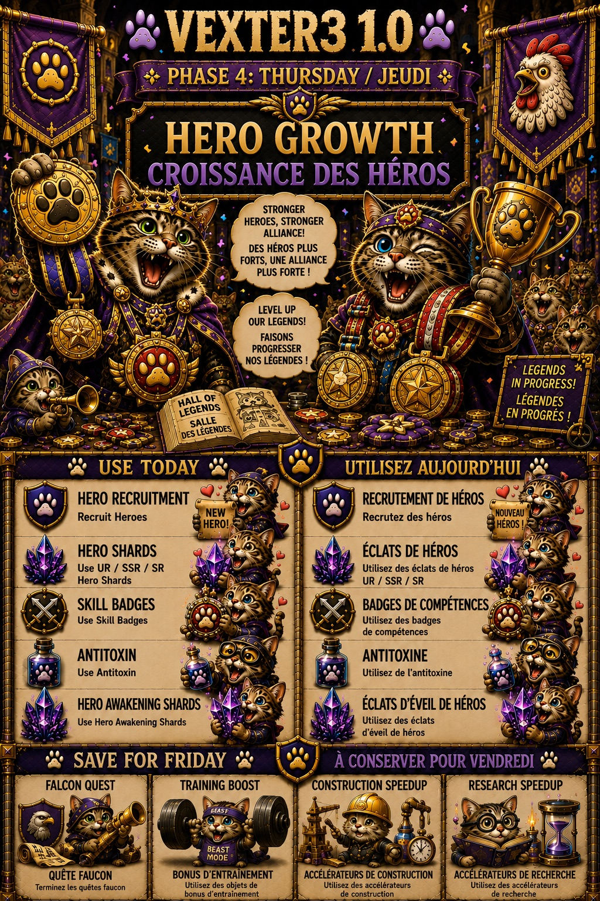
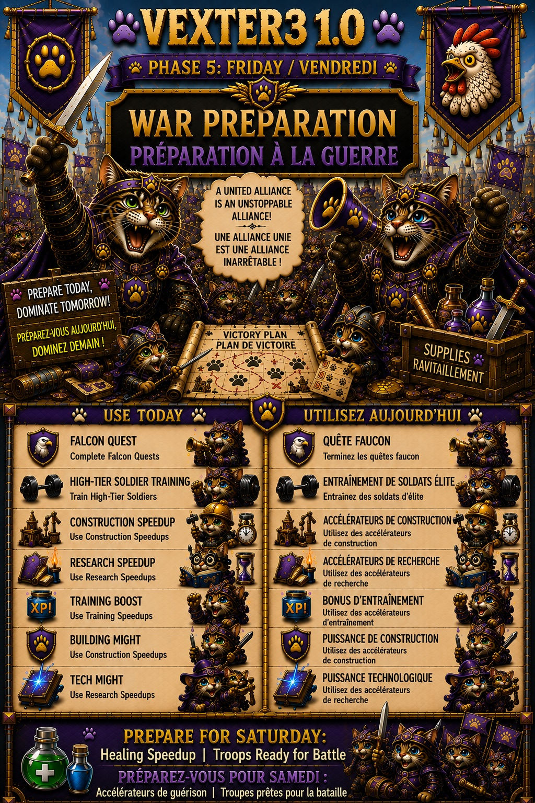
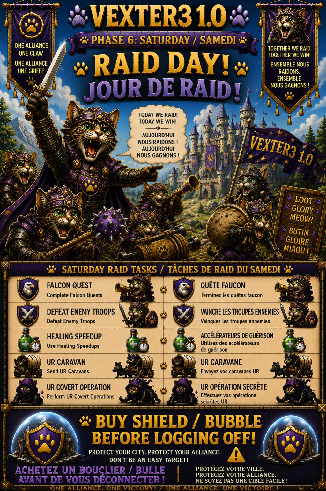

Alliance Duel
Alliance Duel — Monday: Enhance Raven

Monday rewards Raven-focused progression and selected activity. Save the listed Raven resources so one upgrade also contributes to Alliance Duel. The finalized VEXTER3 graphic is the quick-reference authority for the scoring items.
Alliance Duel — Tuesday: Territory Development

Use construction progress, building Might, UR Covert Operations, UR Caravans, Survivor Recruitment, and Exclusive Weapon Shards according to the finalized graphic. When practical, hold major construction pushes for this day.
Alliance Duel — Wednesday: Tech Research

Research Speedups, Study Scrolls, Tech upgrades, Raven Gear Chests, and the other listed activities belong here. This is the natural day for planned research pushes.
Alliance Duel — Thursday: Hero Growth

Save Hero Recruitment, Hero Shards, Skill Badges, Antitoxin, and Hero Awakening Shards for Hero Growth when practical. Prioritize development of your primary squad rather than spending simply for points.
Alliance Duel — Friday: War Preparation

Friday combines troop preparation with several development categories. Training high-tier soldiers and using training speedups are major components, while construction/research activity can also contribute as shown on the graphic.
Alliance Duel — Saturday: Raid Day

Raid Day includes enemy troop defeats, healing speedups, UR Caravans, UR Covert Operations, and Falcon Quests. It also connects directly to weekend-war safety: if you are not actively fighting, shield before you log off.
Duel d'Alliance — Lundi: Amélioration du Corbeau
Duel d'Alliance — Lundi: Amélioration du Corbeau
Gardez les ressources du Corbeau indiquées pour que vos améliorations rapportent aussi des points au Duel d'Alliance. L'image finalisée sert de référence rapide.
Duel d'Alliance — Mardi: Développement du territoire
Utilisez les accélérations de construction, améliorations de bâtiments, Opérations secrètes UR, Caravanes UR, recrutement de survivants et Fragments d'Arme Exclusive selon le graphique finalisé.
Duel d'Alliance — Mercredi: Recherche technologique
Accélérations de recherche, Parchemins d'étude, améliorations technologiques et Coffres d'équipement du Corbeau appartiennent naturellement à cette journée.
Duel d'Alliance — Jeudi: Croissance des héros
Gardez Recrutement de héros, Fragments de héros, Badges de compétence, Antitoxine et Fragments d'Éveil pour cette journée lorsque c'est pratique.
Duel d'Alliance — Vendredi: Préparation de guerre
L'entraînement de troupes de haut niveau et les accélérations d'entraînement sont importants; la construction et la recherche peuvent également contribuer selon le graphique.
Duel d'Alliance — Samedi: Jour de Raid
Jour de Raid inclut les troupes ennemies vaincues, accélérations de soin, Caravanes UR, Opérations secrètes UR et Quêtes du Faucon. Si vous ne combattez pas pendant la guerre du week-end, activez votre bouclier avant de vous déconnecter.